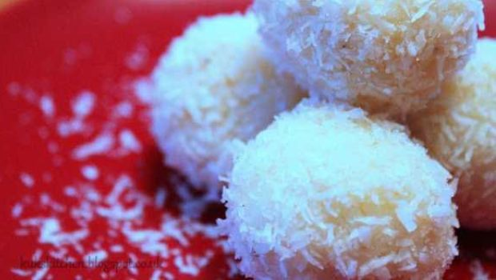

Coconut Balls

Description
Heavenly white sweat coconut balls made with condensed milk and milk
powder.Quick and easy
Ingredients of Coconut Balls
- 4 cups grated coconut, dessicated
- 1/2 cup milk powder
- 1 tin condensed milk
- 1 Tbsp ghee
- 1/2 tsp cardamom powder
- A few tbsps of dessicate coconut to garnish
How to make Coconut Balls
- Heat 1/2 tbsp ghee in heavy bottomed vessel.
- Add coconut and saute for 4-5 minutes on low flame.
- Add 1/2 cup milk powder and a tim of condensed milk and keep stirring
costantly (on low flame ) till it start leaving the sides of the vessel,
approx 8-10 minutes.
- Add 1/2 tsp cardamom powder and mix.Turn off heat and cool.
-
Grease you hand ,make small coconut ladoo ballls and in dessicated coconut.
Home page